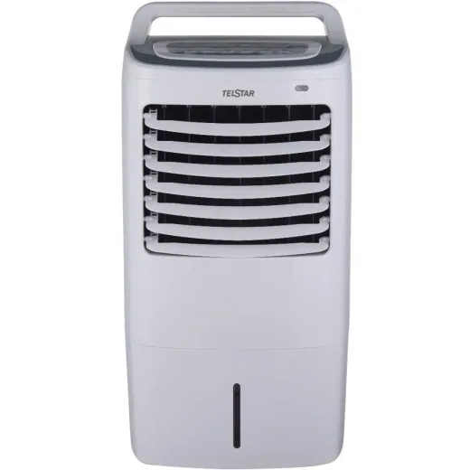
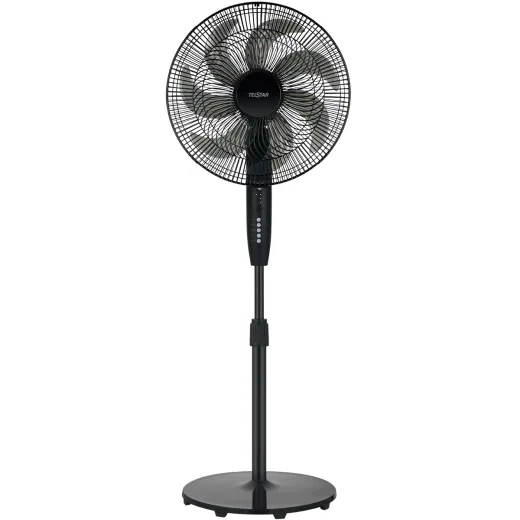
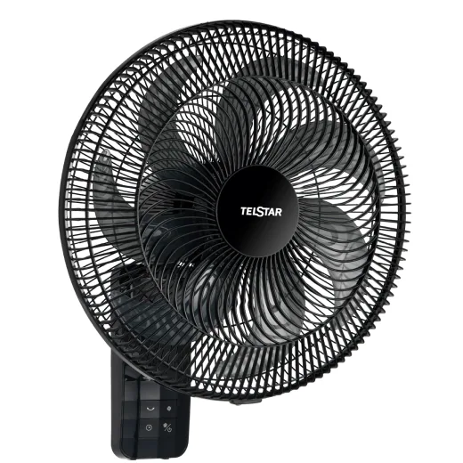
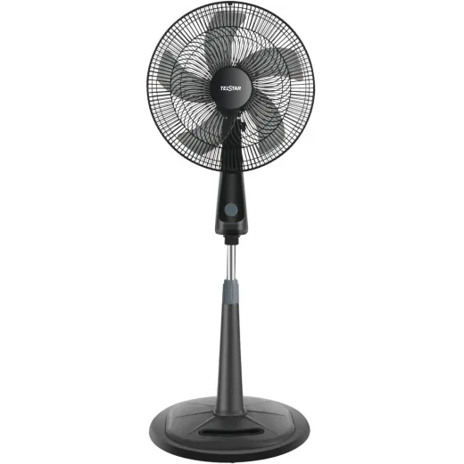

Inicio › Pequeños electrodomésticos

Telstar · Modelo TEA012110MD12L
Enfriador de aire Telstar TEA012110MD12L
L 2,995
En Gallo más Gallo
Precio en cada tienda
| Tienda | Precio | Antes | Disponibilidad | |
|---|---|---|---|---|
| Gallo más Gallo | L 2,995 | — | Disponible | Ver en tienda › |
Precios referenciales tomados de cada tienda el 28 de noviembre de 2026. El precio válido es el que muestra la tienda al comprar.
Historial de precio
Lo seguimos desde el 16 de noviembre. Precio más bajo registrado: L 2,995 en Gallo más Gallo (16 de noviembre), igual que hoy. El precio no ha cambiado en ese tiempo.
Características
| Color | Blanco |
|---|
Descripción
Enfriador de aire Telstar TEA012110MD12L – Brisa fresca y multifunción para el clima hondureño Control de potencia y tiempo a tu gusto Ofrece 3 niveles de potencia y un temporalizador ajustable de hasta 7 horas, para adaptar el flujo de aire a tus necesidades durante el día y la noche. Equipado para moverse contigo Incluye caja de hielo, ruedas y control remoto, lo que facilita desplazarlo por la casa y manejarlo cómodamente sin levantarte. Modos de viento para diferentes momentos Podés elegir entre viento natural, silencioso y normal, ideal para usarlo tanto en la sala como en el dormitorio. Tanque amplio y buen flujo de aire Su tanque de agua de 12 litros y el flujo de aire de 410 m³/h ofrecen una frescura constante, perfecta para el clima cálido de Honduras. Multifunción para mejorar el ambiente Funciona como ventilador, humidificador y purificador de aire, ayudando a que tu espac
Otros pequeños electrodomésticos Telstar
 Plancha Vapor con Base Telstar TPV210110MDL 2,995En Gallo más Gallo
Plancha Vapor con Base Telstar TPV210110MDL 2,995En Gallo más Gallo Ventilador de Pie Telstar 16 pulgadas TVP016221MDL 1,395En Gallo más Gallo
Ventilador de Pie Telstar 16 pulgadas TVP016221MDL 1,395En Gallo más Gallo Ventilador de Pie 3 en 1 Telstar 18 pulgadas TVP018212MDL 1,395En Gallo más Gallo
Ventilador de Pie 3 en 1 Telstar 18 pulgadas TVP018212MDL 1,395En Gallo más Gallo
Abanico Pie Telstar TVP167231MD 16 pulgadasL 1,295En Gallo más Gallo
Ventilador Pared Telstar 16 pulgadas TVW016221MDL 1,195En Gallo más Gallo
Ventilador 3 en 1 Telstar 16 pulgadas TVP301211MDL 1,095En Gallo más Gallo Ventilador Box Telstar 20 pulgadas TVB020210MDL 995En Gallo más Gallo
Ventilador Box Telstar 20 pulgadas TVB020210MDL 995En Gallo más Gallo Abanico Torre Telstar 30 pulgadas TVT030120MDL 895En Gallo más Gallo
Abanico Torre Telstar 30 pulgadas TVT030120MDL 895En Gallo más Gallo